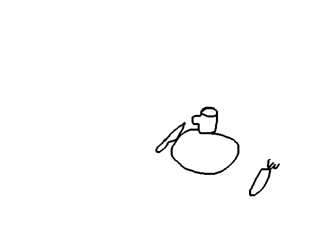
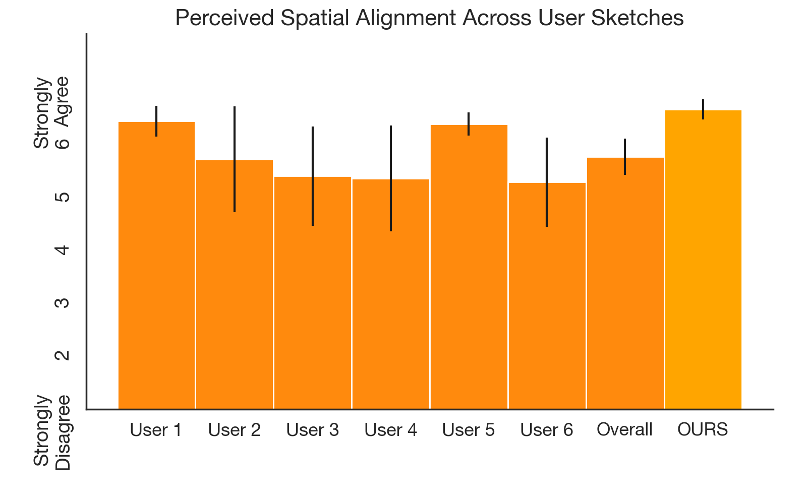

Overview
In addition to the results in the main text, we provide new real-world robotevaluations demonstrating RT-Sketch's compatibility with:
New Embodiments
We deploy RT-Sketch on a Franka Panda robot, demonstrating its compatibility with various robot embodiments.
New IL Backbones
RT-Sketch is compatible with any IL backbone, and we demonstrate its flexibility by implementing a version that uses Diffusion Policy instead of the original Transformer architecture.
New Tasks
We demonstrate 2 tasks on the Panda:
(1) setting the table, w/ different utensil/plate arrangements
(2) opening/closing cabinets
New Sketch Types
For the cabinet task, we demonstrate that the policy can learn to open/close based only on quick-to-draw arrows rather sketching the entire scene.
Multimodal Goals
For tasks where sketches or language may not provide sufficient context individually, we show that RT-Sketch can be extended to accommodate both sketches and language for improved performance.
Additional Franka Results
Implementation Details
For the below experiments, we use a Franka Panda robot with a Robotiq gripper. For each task, we collect on the order of 50-60 demonstrations consisting of delta actions (from a Spacemouse) and observations from two RealSense cameras (wrist-mounted + table-mounted). We then manually sketch the goals (less than 15min. per task). We implement RT-Sketch with a goal-conditioned Diffusion Policy architecture, which uses ResNets to separately encode the agent image, wrist image, wrist depth image, and goal sketch and concatenate the embeddings as input to the noise prediction network. Training takes ~3 hours per task on a single A5000 GPU, and we deploy the resulting policy onto the robot using DDIM as the denoiser and a Polymetis controller at 10Hz.
Task 1: Table Setting
We train RT-Sketch to perform table setting from 60 demonstrations
.Sketch Variations Considered
Successful Rollouts
Sketches can easily capture different desired arrangements of utensils, and the
policy is capable of setting the table accordingly in 10/15 trials:


Robustness to Distractors
Sketches inherently help the policy attend to task-relevant objects, such that the policy is able to complete the task even when things are moving around (people, spills, etc.) or distractor objects are present (napkins, etc.).


Failures
Occasionally, the policy struggles with imprecision which can lead to failed grasps, but typically still makes partial task progress:


Task 2: Drawer Opening and Closing
We train RT-Sketch to perform drawer opening and closing from 50 demonstrations, but specifically we consider sketches which are arrows drawn over the current image rather than sketches of the entire scene. Here, arrows can represent which drawer (top or bottom) should be opened or closed.
.Successful Rollouts
We see that even from extremely minimal goals (less than 5 seconds to specify),
the policy is able to interpret and act upon the intended goal.


Failures
Of course, the policy is not without failures and a typical failure mode is improperly grasping the cabinet handle:

Limitations
We acknowledge that extremely minimal sketches remains a challenging problem, and we hope to further explore this direction in future work. Ongoing advances in image-to-sketch conversion and more drastic data augmentations can likely help to address this class of sketches. The above policies also generalize only within a relatively small range of the workspace, so we hope to improve the sample efficiency and generalization capabilities of these models in the future.
Additional Everyday Robot Results
Towards Multimodal Goal Specification
Language Alone
Sketch Alone
Sketch + Language
Wrong placement location
Not upright
Upright, correctly placed
"place the pepsi can upright"
"place the pepsi can upright"
Wrong placement location
Correct placement
Correct placement
"place the orange on the counter"
"place the orange on the counter"
We are excited by the prospect of multimodal goal specification to help resolve ambiguity from a single modality alone, and provide experiments to demonstrate that sketch-and-language conditioning can be favorable to either modality alone. We train a sketch-and-language conditioned model which uses FiLM along with EfficientNet layers to tokenize both visual input and language at the input. Here, we see that while language alone (i.e. "place the can upright") can be ambiguous in terms of spatial placement, and a sketch alone does not encourage reorientation, the joint policy is better able to address the limitations of either modality alone. Similarly, for the Pick Drawer skill, the sketch-conditioned and sketch-and-language-conditioned policies are more precisely able to place the orange on the counter as desired.
Robustness to Sketches Drawn by Different People
We evaluate whether RT-Sketch can generalize to sketches drawn by different individuals and handle stylistic variations via 22 human evaluators who provide Likert ratings. Across 30 sketches drawn by 6 different individuals using line sketching (tracing), RT-Sketch achieves high spatial alignment without a significant dropoff in performance between individuals, or compared to our original sketches used in evaluation. We provide the sketches drawn by the 6 different individuals and the corresponding robot execution videos below.
